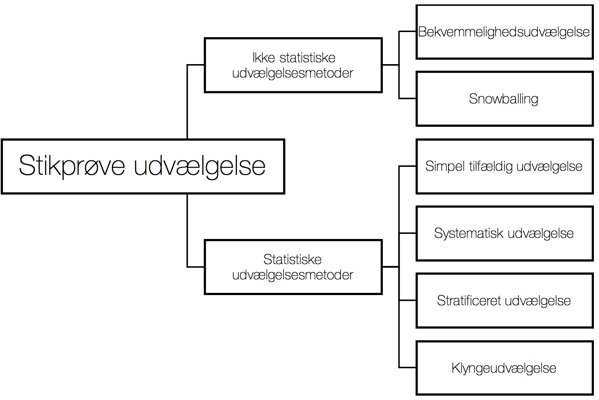

Kapitel 7 Stikprøveteori
Der findes forskellige metoder, til at udtage en stikprøve fra en population. Vort ønske er at stikprøven er repæsentativ for den population, vi ønsker at udtale os om. At stikprøven er repæsentativ, betyder at stikprøven afspejler populationen korrekt, det er svært at sikre repræsentativitet. Man kunne forestille sig en stikprøve var repræsentativ mht. køn og alder i populationen, men ikke mht. det andre parametre som fx indkomst og geografi.

Nogle af de vigtigste stikprøve udvælgelsesmetoder er illustreret i figuren og nævnt herunder.
7.1 Bekvemmelighedsudvælgelse
Bekvemmelighedsudvælgelse er som navnet antyder, den letteste stikprøveudvælgelsesmetode, men det kan også være en meget upræcis metode. Hvis man fx. udvælger forbipasserende på strøget, er stikprøven nem at indsamle, men ikke nødvendigvis repræsentativ.
 1. Er populationen fx. danskere, får man her en overrepræsentation af københavnere.
1. Er populationen fx. danskere, får man her en overrepræsentation af københavnere.
Var populationen en landmands produktion af agurker, kunne bekvemmelighedsudvælgelse fx. betyde at landmanden udtager en stikprøve fra de nærmeste planter. Stikprøven vil måske ikke være repræsentativ for populationen mht. vanding, gødning, sol og varme etc.
Hvis Elektronikfabrikanten Foxconn, der producerer forbrugerelektronik, kvalitetssikrer på baggrund af bekvemmelighedsudvælgelse, kunne man forestille sig man udtager stikprøven fra nærmeste samlebånd. Stikprøven vil måske ikke være repræsentativ for populationen mht. til kvaliteten, der er måske forskellig kvalitet i forskellige fabrikshaller, forskellige lokationer, under forskellige produktionsledere, produktionsanlæg, medarbejdere etc.
7.2 Snowballing
Snowball udvælgelse betyder at deltagerne i ens undersøgelse selv rekrutterer yderligere deltagere. Ofte vil der være gode chancer for, at folk, der er relevante for undersøgelsen, kender andre, der også er. Disse nye deltagere kender måske flere mennesker, der kan deltage osv. Denne udvælgelses metode er nem men ikke nødvendigvis repræsentativ for populationen.
- Ønsker man at undersøge unges kendskab til forsikring, kunne man få de oprindeligt udvalgte deltagere til at videresende spørgeskemaet til andre unge de kender.
7.3 Simpel tilfældig udvælgelse
Ved simpel tilfældig udvælgelse har hver respondent eller element i populationen (fx. unge, agurker, danskere, elektronisk komponenter) samme sandsynlighed for at blive udtrukket. Man sørger altså for, at alle i populationen, har samme chance for at komme med i stikprøven, dette er svært at administrere uden registre eller samme tilgang til alle respondenter eller elermenter i stikprøven. Man kan også være begrænset fx. fysiske, administrative eller geografiske begrænsninger. Simpel tilfældig udvælgelse er samme princip som udtrækningen af lottotallene, hvor alle tal er lige sandsynlige.
- Er populationen på 1 mio., skal sandsynligheden for udtrækning således være \(\frac{1}{1.000.000}=0.000001\) for hvert element i populationen.
7.4 Systematisk udvælgelse
Man kan udvælge respondenter systematisk, hvis man har en ordning af populationen, ordningen kan fx. være ud fra løbenummer, tid, alfabet etc.
- Ønsker man at belyse deltagerne i en konferences holdning, kunne man interviewe hver 10. deltager når du forlader konferencen.
7.5 Stratificeret udvælgelse
At stratificere betyder man opdeler populationen i ens grupper eller segmenter, dette kaldes stata. Der er måske grupper i populationen, med samme karakteristika, det kan være specielle holdninger, etnicitet, indkomst, socialklasse, køn eller andre kriterier, der kan have betydning for folks holdning. Stratificeret udvælgelse vil ofte give mere præcise resultater, end simpel tilfældig udvælgelse.
Skal man undersøge befolkningens holdning til udflytningen af statslige arbejdspladser, vil der måske være forskel på holdningen alt efter om man bor i by eller på land, er mand eller kvinde. Befolkningenen kunne inddeles efter køn, by- og landbefolkning, så man får 4 strata med nogenlunde ens holdninger.
Det kan være landmanden, der dyrker agurker, opdeler populationen i 3 strata i forhold til kvaliteten af drivhusene.
7.5.1 Proportional allokering
Proportional allokering, betyder man sikrer hvert strata har en andel i stikprøven, der svarer til andelen i populationen.
Udgør andelen af kvinder i landbefolkningen 20% af befolkningen, skal stikprøveandelen således være 20%. Har man adspurgt 1000 respondenter, skal 200 af disse således være kvinder, der bor på landet.
Har Landmanden 30% af sin produktion i kvalitet 1 drivhuse, skal 30% af stikprøvens agurker stamme fra disse drivhuse.
7.5.2 Optimal allokering
Optimal allokering betyder man udtager flere respondenter, fra strata med højere varians, for at korrigere for den højere usikkerhed i disse strata. Optimal allokering, er en stikprøve udvælgelsesmetode, der kan give mere præcise resultater end proportional allokering. En forudsætning er at man kender populationsvariansen, det gør man jo normalt ikke, derfor bliver metoden mindre præcis, hvis vi skal estimere variansen ud fra variansen i stikprøvens strata.
Man kunne forestille sig at kvinder i landbefolkningen, var et mere homogent stratum end mænd i landbefolkningen, variansen blandt kvinder i landbefolkningen er altså mindre end for mænd. Benytter optimal allokering, indsamles så en forholdsmæssigt større stikprøve blandt mænd på landet, end ved den proportionale allokering.
I 1936 gennemførte Readers Digest en meget stor og dyr undersøgelse, man spurgte 2,4 mio. vælgere for at finde ud af, hvem de ville stemme på ved præsidentvalget. Stikprøven viste at 57% stemme på Landon og 43% på Roosevelt. Resultatet af valget blev at Roosevelt vandt med 62% mod 38% til Landon. Problemet ved det voldsomme fejlskøn lå primært i stikprøveindsamlingen. Vælgerne var udvalgt ud fra telefonlister, abonnementer og medlemslister til klubber. I 1936 var telefon en luksus, som fx. de 9 mio arbejdsløse, ikke havde råd til. Man kalder denne type problem ved udvælgelsen, hvor grupper fra populationen ikke repræsenteres korrekt, for coverage error, dette resulterer i stikprøve bias eller udvælgelses bias. George Gallup forudsagde korrekt Roosevelt ville vinde, udfra en mindre stikprøve med kun 50.000 respondenter.
7.5.3 Poststratifikation
Poststratifikation eller efter stratificering, betyder man efter man har indsamlet stikprøven, vægter strata med forskellige vægte, dette giver ikke så gode resultater som hvis man har planlagt stratificeringen på forhånd.
7.6 Klyngeudvælgelse eller cluster udvælgelse
Klyngeudvælgelse betyder man opdeler populationen i klynger. Klynger fx. forskellige afdelinger i en virksomhed eller geografiske områder i befolkning fx boligområder. Så udtager man til stikprøven samtlige respondenter fra et antal tilfældigt udvalgte klynger.
Man kunne forestille sig at man opdelte landet efter veje, og herefter spurgte samtlige respondenter på tilfældigt udvalgte veje.
Det kunne være at landmanden undersøgte samtlige agurker på udvalgte vækstborde, klyngerne ville så være vækstbordene.
Foxconn kunne opdele populationen i klynger efter hvilket samlebånd, de blev produceret på, og så tilfældigt udvælge et antal klynger, hvor man undersøger samtlige elektronikprodukter.
Spørgsmål nonfood dagligvarer
En virksomhed, der producerer nonfood dagligvarer, har salgskanaler i hele verden. Man omsætter følgende mængder af luftfriskere i distributionsnettet. Forretningerne kan indeles i kategori lille, mellem og stor efter omsætning. Man kender populationens størrelser for de enkelte strata, samt følgende oplysninger nedenfor:
| Omsætning | Populations størrelse | Stikprøvestørrelse | Omsætning (1000 kr) i gns. | Standard afvigelse |
|---|---|---|---|---|
| Lille | 10.000 | 250 | 25 | 5 |
| Mellem | 15.000 | 300 | 32 | 6 |
| Stor | 30.000 | 450 | 39 | 7 |
| Total | 55.000 | 1000 |
- Beregn det gennemsnitlige salg af luftfriskere pr. forretning samt et 95% konfidensinterval
for det gennemsnitlige salg af luftfriskere pr forretning.
- Hvordan burde stikprøven have være udtaget for hvis man benytter proportional allokering?
- Hvordan burde stikprøven have være udtaget for hvis man benytter optimal allokering, hvis vi forudsætter stikprøve standardafvigelsen svarer til populationsstandardafvigelsen?
- Vi forestiller os nu virksomheden, havde benyttet optimal allokering til at bestemme stikprøvestørrelserne i de 3 strata. Hvis man havde fået samme gennemsnitlig omsætning i 1000 kr. og samme stikprøve standardafvigelse, hvad ville konfidensintervallet da have været?
Man sælger også hårvoks i samme distributionsnet, her ønsker man på forhånd at bestemme den optimale indsamling af en stikprøve, man kender ikke standard afvigelsen fra de 3 strata, men vurderer ud fra tidligere analyser at standardafvigelsen kan antages at være 10, 15 og 12 for hhv. lille, mellem og stor. Man ønsker at indsamle en samlet stikprøve på 5000 fra de 3 strata.
- Hvor mange stikprøver er det optimalt at indsamle fra hver af de 3 strata?
Svar nonfood dagligvarer